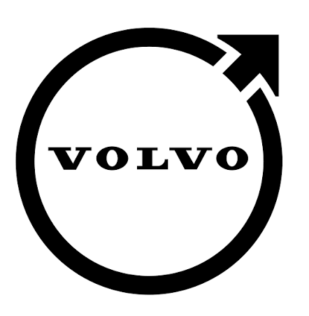

Jun 2026 — August 2026AI Test Automation Engineer (Summer Worker)
Volvo Group, Gothenburg, Sweden
- Developed multi-agent AI workflows and knowledge-graph retrieval systems that automate technical requirement analysis and test-case generation.
- Designed and deployed the AI workflow to production for software validation in electromobility systems, reducing manual effort and increasing test case coverage.